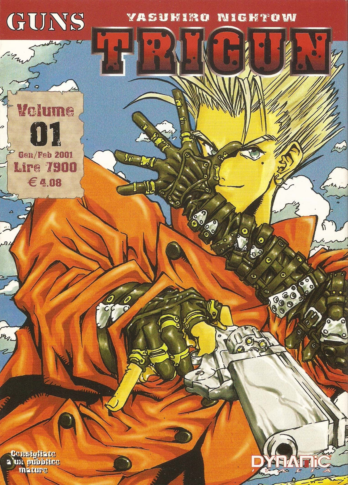
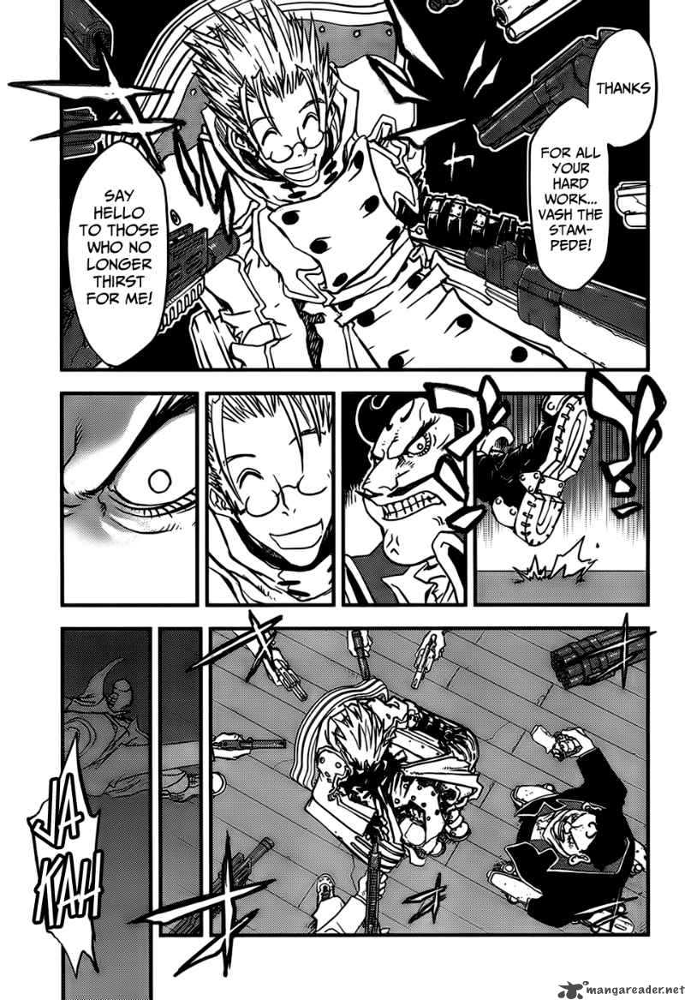

Trigun
by Yasuhiro Nightow
Synopsis
Vash the Stampede is a legendary gunman with a massive bounty on his head, known for supposedly destroying entire towns. Despite his fearsome reputation, Vash is a cheerful pacifist who refuses to kill anyone. Followed by insurance agents Meryl Stryfe and Milly Thompson, he travels across a harsh desert planet while confronting dangerous bounty hunters, uncovering secrets about his past, and struggling to protect innocent lives.
Chapter 1

On a harsh desert planet, rumors spread about Vash the Stampede, a notorious gunman blamed for widespread destruction. With a staggering bounty on his head, he attracts dangerous criminals wherever he goes.
When insurance agents Meryl Stryfe and Milly Thompson set out to find him, they expect to encounter a ruthless outlaw. Instead, they discover a strange, cheerful man whose determination to protect people clashes with his terrifying reputation.
— End of chapter —